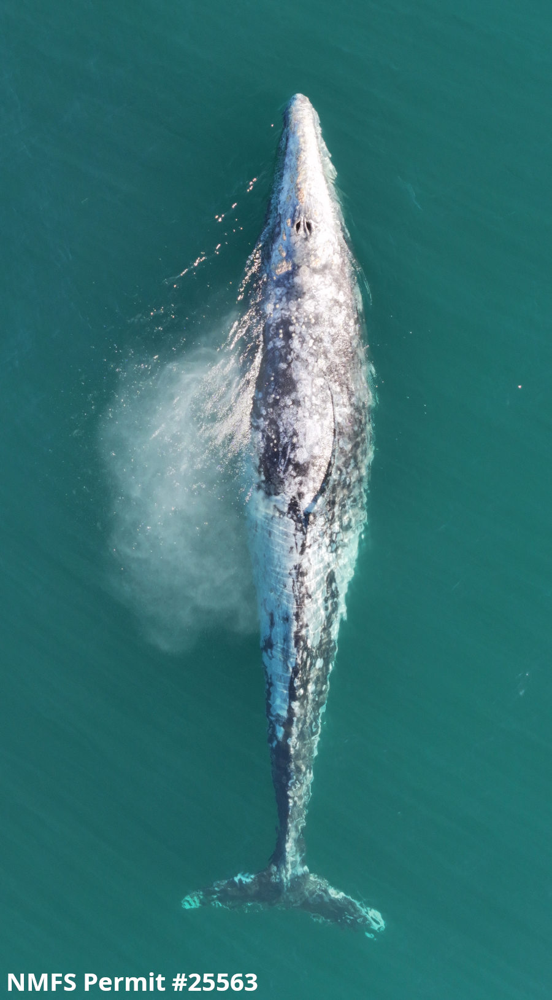

A state-space model for projecting population abundance
Contributors: Peter J. Mahoney1*, John R. Brandon2, Jonathon Scordino3
1NOAA, NMFS Alaska Fisheries Science Center, Marine Mammal Laboratory, Seattle, WA
2Senior Biometrician, ICF International, San Francisco, CA
3Marine Mammal Program, Makah Fisheries Management, Makah Tribe, Neah Bay, WA
*POC: peter.mahoney@noaa.gov
Last updated on 2025-03-04.
Executive summary
Purpose
The abundance of gray whales within the Pacific Coast Feeding Group (PCFG) - a subset of the broader Eastern North Pacific (ENP) population - is estimated within a Jolly-Seber modeling framework using data derived from yearly mark-resight surveys (Harris et al. In prep). Due to the time required to match thousands of sightings each year to a growing photographic catalog, the most recent abundance estimates often lag behind the current calendar year by one or more years. However, management decisions are contingent upon abundance estimates for PCFG gray whales through the current calendar year or into the next. To meet this need, we implemented a Bayesian state-space model (SSM) to predict abundance beyond the last year for which PCFG abundance was estimated.

Key results
The modeled PCFG population abundance projections for 2024 and 2025 are as follows:
| Projection Year | N | Nmin |
|---|---|---|
| 2024 | 211.3 | 194.2 |
| 2025 | 211.2 | 186.6 |
A suite of six competing models were fitted to estimates of PCFG gray whale abundance derived using mark-resight survey data from 2002 through 2023. Each model reflects hypothetical drivers of population growth within the PCFG and our current understanding of the system as whole (Model Description). The most recent estimate of PCFG abundance in 2023 was 213.1 (SE = 15.5, Nmin = 200) non-calf individuals within the PCFG (Harris et al. In prep).
Of the six models considered, the autoregressive model with a one-year lag (AR1) fit the full time series of abundance data the best (Table 2). When evaluating the ability of each model to predict a “future” population size using the historical time series as a reference (the so-called Retrospective Analysis), the AR1 model continued to perform best when naively projecting one year forward based on models fit to truncated time series and when projecting one or two years forward when using a model fit to the complete time series. However, the uncertainty associated with projected estimates in year two appear to be conservative when using AR1 relative to the other models considered. The base model, or the model where \(\lambda\) was based on a posterior prediction for mean annual \(\lambda\)s, performed best when naively projecting two years forward with truncated time series.
Evaluating the naive predictions revealed that the model with ENP strandings substantially underestimated PCFG abundance following an unusual mortality event (UME) in 2019 (see Figure 1). Although model predictions improved when fit to the complete time series, the covariate for ENP strandings was removed from consideration out of an abundance of caution until such time when the impact of another UME on model predictions can be evaluated (the UME in 2019 was the only such event between 2002 and 2023). The removal of ENP strandings reduced the model set from six to four total models.
In addition, both the base and AR1 model could be slow to respond to rapid changes in population growth given neither model accounts for environmental factors signaling a change in population trend. However, the extent of the overshoot is dependent on the degree to which \(\lambda\) shifts, but overall the AR1 model recovers the quickest (Figure C1-C4). Further, the base model, by virtue of relying on an average expectation for \(\lambda\), exhibits a persistent bias in population estimates during both extended negative and positive population trends (Figure C1-C4).
In light of these behaviors, and the inherent uncertainty associated with model selection, a model averaging approach was used to forecast abundance estimates through 2024. However, due to the poor performance of models with ENP strandings during the 2019 UME, the model averaging was constrained to the remaining four models. The weighted model average predictions in the Results table above therefore represent our best supported and most accurate projections of PCFG population abundance in 2024 and 2025 The model-averaged estimates for PCFG abundance (N) and minimum abundance (Nmin), including the estimates from the four models individually, were above key management thresholds in 2024 and 2025
Methodology
Model development
Several models were developed and evaluated to forecast the population size of PCFG gray whales in future years. To do so, we consider the most recent available estimate of population size, and apply a model-estimated annual growth rate (i.e., \(\lambda\)) over time. The models developed for population forecasting varied based on assumptions made about the PCFG growth rate (e.g., assuming \(\lambda\) in a given year is or is not correlated with \(\lambda\) in the previous year), and factors hypothesized to be correlated with population growth (such as how many calves had been sighted or how many ENP gray whales had washed ashore dead or stranded in the previous year). Details about the parameters included in each of the six models can be found on the Model Description page.
Model selection
Model fit was evaluated using leave-one-out cross validation (LOOCV) using the complete mark-resight time series from Harris et al. (In prep). LOOCV is a method whereby models are fit to the full dataset, but the quality of the fit is evaluated by iteratively removing and predicting a single record from the data time series (in this case, an annual abundance estimate). Models were in turn ranked using the leave-one-out information criterion (LOOIC, Vehtari, Gelman, and Gabry 2017), a criterion based on LOOCV wherein smaller values equate to better fitting models (see “Leave-one-out Cross Validation”).
Model evaluation and performance
Model performance was evaluated by assessing the ability of each model to retrospectively predict a “future” known population abundance from the mark-resight time series (see Harris et al. In prep). Specifically, predictive accuracy of each model was evaluated by fitting to 1) a truncated time series where the model was fitted with data only up to the prediction year being evaluated to make the same predictions, and 2) the full time series, less the number of years being predicted (e.g., 2002 - 2021). Scenario (1) reflects the naivety of the current model to future population states when projecting estimates, but constrains knowledge of the system and associated dynamics by truncating the data time series, providing a pessimistic assessment of models that are more sensitive to sample size. Scenario (2) provides the most comprehensive understanding of factors influencing \(\lambda\), but can impose undue influence on projections from past years, providing a slightly optimistic assessment of predictive performance. Details from these assessments can be found in sections “Model fits derived from truncated time series” and “Model fits derived from full time series”.
Simulation analyses were also conducted to look at model behavior for the models most likely to over- or under-predict the true abundance following a trend in \(\lambda\). Two hypothetical scenarios were tested; 1) a stable population of 250 individuals (\(\lambda\) = 1 for 15 yrs) that went into successive years of decline, and 2) a stable population of 125 individuals (\(\lambda\) = 1 for 15 yrs) that experienced successive years of growth (see “Simulation analysis”).
Model averaging
In cases where the accuracy of predictions is paramount, model averaging is recommended as a means of dealing with uncertainty in model selection and model behavior (Burnham, Anderson, and Huyvaert 2011; Anderson 2007). Model averaging is a statistical approach by which multiple models are combined in order to derive a single best estimate. The models are combined by first estimating the strength of support for each model (via metrics such as LOOIC), which in turn is used to derive model-specific weights reflecting how much influence each model will have on the final estimates. Here, model weights were derived using a pseudo-Bayesian model averaging approach with bootstrapping (Yao et al. 2018). These weights were then applied to the abundance estimates from 2002 through 2023 as well the forecasted estimates through 2025.
Future Updates
This forecast will be updated as new PCFG abundance estimates become available. With each additional year, we anticipate the model predictions will become more accurate as the time series informing it becomes longer. The exact weighting of models may vary from year to year; new data may reveal changes in model performance, and the relative weighting of models averaged to predict PCFG abundance will be updated to reflect the most recent data available.
Models containing coefficients dependent on external data (i.e., calf counts) may be dropped if data of suitable quality are not available for a given year. Testing and validation demonstrate the Base and AR1 models perform sufficiently to make reasonable predictions of PCFG abundance in the absence of recent calf counts.
References

U.S. Department of Commerce | National Oceanographic and Atmospheric Administration | NOAA Fisheries